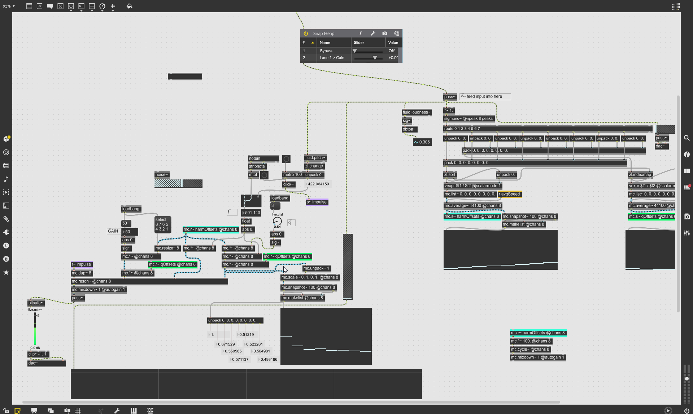

A modal resonator that can analyze an input signal and map its harmonics onto the resonator in realtime.
it's currently very unfinished, so i'll update this page as I make progress.
maybe it'll have a single update with a finished version, maybe it'll have like 30. idk.
i'll seperate updates with horizontal dividers.
skeletal version. only 8 bands, monophonic, no ui, no ux, really scuffed stuff.
this is just the raw concept. I doubt this is useful to anybody since it doesnt have a ui but i figured i'd put it up here anyways since i spent a couple days on this prototype
download
